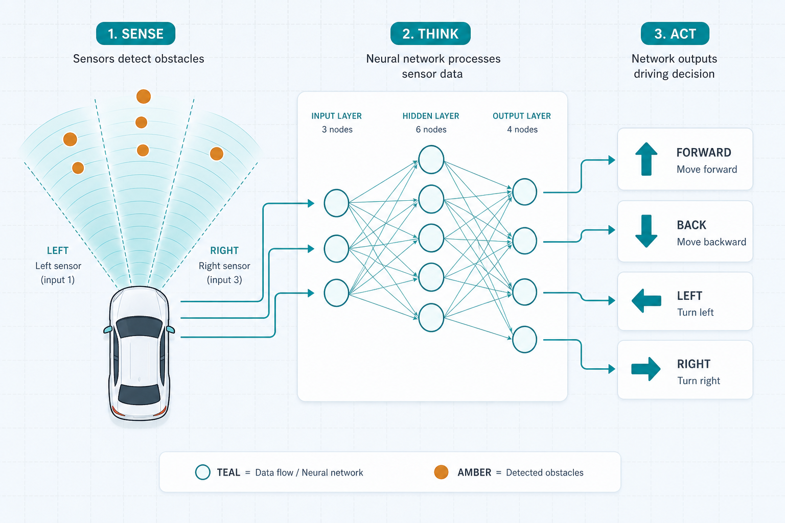

Demo · car-nnslides + app
Sensor → action
Fully connected NN: 3 hướng cảm biến điều khiển xe tiến / lùi / trái / phải.
L · M · R→
hidden FC→
4 actions
01notes/04-demo-car.md
Architecture3 layers
Input · Hidden · Output
input
Sensors
Trái · Giữa · Phải ∈ [0, 1]. Vật cản → giá trị < 1.
hidden
Fully connected
Lớp đệm học tổ hợp tín hiệu môi trường.
output
Actions
forward · back · left · right (argmax).
02fully connected classifier
Picturesense → think → act
Hình minh họa

03slides/assets/car-nn-sensors.png
Lifecycletrain → infer
Hai lớp tư duy
train
Học
Thu cặp (sensor, action) → nhiều epoch → lưu weights.
infer
Dùng
Realtime: đọc sensor → model → lệnh điều khiển.
App demo dùng weights đã tinh chỉnh (rule-trained) để bạn xoay sensor và xem action.
04notes/06-train-infer.md
Nextworking app
Mở app · kéo sensor
xem action.
Kéo sensor L/M/R rồi xem mạng chọn action — chạy thẳng trong trình duyệt.
Mở working app →05demos/car-nn/app